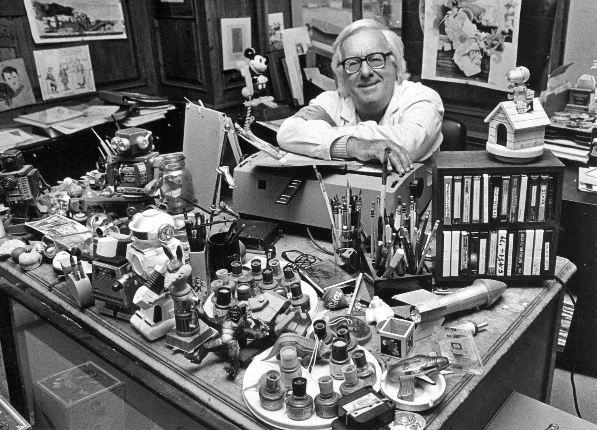
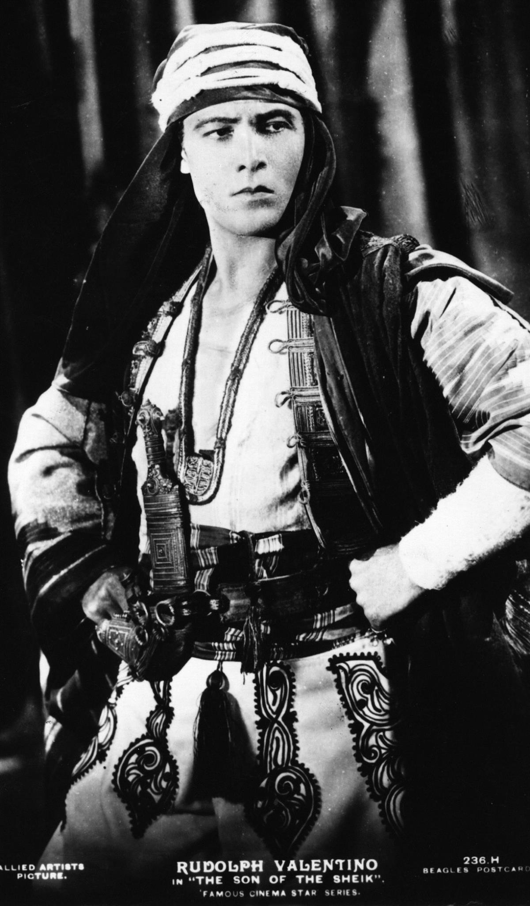
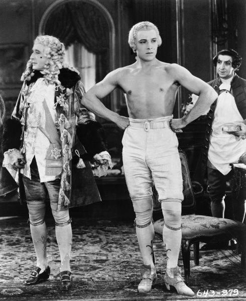
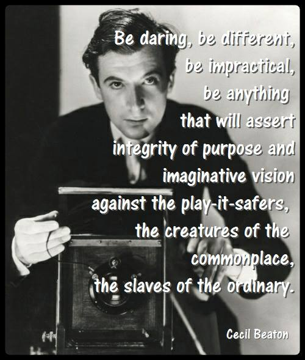

Guys
Classic movie stars, artists, quotes and male pulchritude…Huss-hes!
Featured:

Stay tuned for upcoming, brand new INTERVIEW with Jimmy James
Sher and Jimmy have shared all sorts of things – and laughed a lot – over the years. He is one of the most multi-talented singers/impressionists and naturally funny (and kind) people on the planet!
He’s a singer-songwriter (including the hit FASHIONISTA), recording and tribute artist- — and formerly MARILYN MONROE. Plus he “does” Cher, Bettie Davis, Barbra Streisand, Judy Garland, and more, more, MORE!
Say whaaaat? Say visit his website for samples of his absolutely incredible talent (and we don’t blither those compliments often, darlings) .
Jimmy and Sher talked about this, that and all sorts of things just for YOU, darlings. Stay tuned!!!
Watch Jimmy James here!

Hanging Out with Jimmy Carter
Yes, darlings, I’ve been known to do things other than practice the art of the withering stare and having multiple sarcasms including hanging out with Jimmy Carter. Really.
And he has a special place in my heart for his kindness towards me when I was very young and had little self-confidence. He's the only president I can say I knew way back in the day and actually hung out with - but I did....
Ray Bradbury

I never met him, darlings… but did talk to Mr. Bradbury on the phone when I wrote for the late and lamented fabulous OMNI magazine. It was the only time in my loco vida I remember turning into a fangirl and blithering.
Mr. Bradbury didn’t seem to notice – he was charming, helpful, sigh, wonderful… and an inspiration since I was 12 years old. As soon as I first read his mesmerizing stories, I suddenly I wanted to write, write, write, too! --Sher
“If you want to write, if you want to create, you must be the most sublime fool that God ever turned out and sent rambling. You must write every single day of your life. You must read dreadful dumb books and glorious books, and let them wrestle in beautiful fights inside your head, vulgar one moment, brilliant the next.
You must lurk in libraries and climb the stacks like ladders to sniff books like perfumes and wear books like hats upon your crazy heads.
I wish you a wrestling match with your Creative Muse that will last a lifetime. I wish craziness and foolishness and madness upon you. May you live with hysteria, and out of it make fine stories — science fiction or otherwise.
Which finally means, may you be in love every day for the next 20,000 days. And out of that love, remake a world.” -- Ray Bradbury (August 22, 1920 – June 5, 2012).
Tom Robbins
"I write to twine ideas and images into big subversive pretzels of life, death, and goofiness - on the chance that, like the Trickster figure in tribal myths, they might help keep the world lively and give it the flexibility to endure. On the other hand, having been at it off and on since age five, writing may simply be a lifelong bad habit." - Tom Robbins, the over-the-top original author of Even Cowgirls Get the Blues, Another Roadside Attraction, Still Life with Wood pecker and more.
And, of, we adore his BRAZEN originality and quirkiness!!
From Jitterbug Perfume: “Our individuality is all, all, that we have. There are those who barter it for security, those who repress it for what they believe is the betterment of the whole society, but blessed in the twinkle of the morning star is the one who nurtures it and rides it in, in grace and love and wit, from peculiar station to peculiar station along life's bittersweet route.”
Rudolph Valentino
Yes, darlings, his memory is still, well, HUNKY (we need something cool to drink after perfusing his mal pulchritude).

"Women are not in love with me but with the picture of me on the screen. I am merely the canvas on which women paint their dreams." - Rudolph Valentino, who went to that great opening night party in the sky on August 23, 1926.
James Cagney
"There's not much to say about acting but this: Never settle back on your heels. Never relax. If you relax, the audience relaxes. And always mean everything you say." --- James Cagney, born July 17, 1899.
